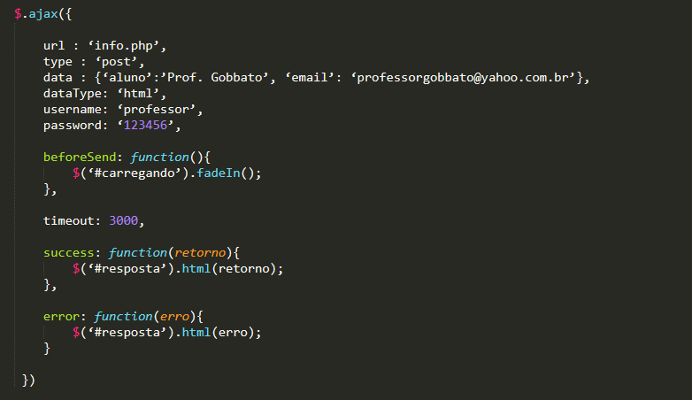

Basicamente temos duas formas de armazenar dados no cliente:
Embora a API Web Storage tenha diversas vantagens sobre o uso de cookies, iremos abordar os dois conteúdos, visto que também podemos manipular cookies em linguagens server-side e porque muitos projetos ainda utilizam esse recurso.
São informações gravadas por uma aplicação web na máquina cliente. Para cada domínio da aplicação, é gerado um arquivo txt, que contém os cookies.
Os cookies são formados por um par composto de:
Os cookies são mantidos na máquina cliente enquanto seu prazo de “vida” não expirar ou enquanto o usuário não limpá-los através do navegador
Como padrão, podemos criar cookies de até 10Kb. Isso quer dizer que podemos ter um cookie de 10k ou 50 cookies no máximo, que totalizam juntos 10k. Esses valores correspondem aos cookies de um determinado domínio. Esses valores podem variar conforme o browser.
Para gravar algumas informações que, posteriormente, poderemos usar em nossa aplicação web.
Em um exemplo clássico, podemos trabalhar com os cookies em um e-commerce. Enquanto o usuário está fazendo a escolha dos pedidos e colocando-os no carrinho de compra, podemos armazenar os dados dos produtos em cookies. Após a finalização da compra, gravamos os dados em um banco de dados e limpamos o cookie.
Vamos testar essa ideia usando o site do Submarino.
Qualquer site pode gravar cookies em sua máquina, desde que essa permissão esteja habilitada em seu navegador.
Um cookie não pode apagar arquivos em sua máquina e muito menos “roubar” suas senhas.
Um site só pode acessar os cookies gravados pelo seu domínio, ou seja, uma aplicação só pode acessar os cookies gravados por ela.
Podemos manipular os cookies em JavaScript através do comando:
document.cookie
NAME = Valor; EXPIRES = Data; PATH = Caminho; DOMAIN = Nome_Dominio.
NAME: é uma string de caracteres usada para identificar o cookie.
EXPIRES: é a data em que o cookie deve ser removido do arquivo de cookies se ele ainda estiver lá. Não sendo especificada nenhuma data, o cookie terá sua validade vencida assim que o usuário sair do browser e encerrar a sessão.
PATH: é o nome do caminho ou URL do documento que criou o cookie (motivo privacidade)
DOMAIN: é o nome completo do domínio do servidor (ou computador central) que criou o cookie.
Podemos manipular os cookies facilmente utilizando um plugin para o jQuery
Plugin cookie para o jQuery
Abaixo, um formulário contendo alguns campos.
//CÓDIGO APOSTILA - NÃO FUNCIONANDO - VERIFICAR
Com essa API, o desenvolvimento fica mais fácil e temos algumas vantagens sobre os cookies; a mais significativa seria a capacidade de armazenamento, que varia, de acordo com o navegador, de 5MB até 10MB (IE).
A Web Storage oferece dois tipos de armazenamento: sessionStorage e localStorage.
Disponível apenas para a janela (aba) que criou o dado até que esta seja fechada.
Compartilhada por todas as janelas (abas) abertas pela aplicação, e os dados só são apagados caso sejam deletados pela aplicação ou pelo usuário.
setItem(nome, valor)
Ex: localStorage.setItem(“nome”,”Maria”);
Ex: sessionStorage.setItem(“nome”,”Maria”);
getItem(nome)
Ex: localStorage.getItem(“nome”)
Ex: sessionStorage.getItem(“nome”)
removeItem(nome)
Ex: localStorage.removeItem(“nome”)
Ex: sessionStorage.removeItem(“nome”)
clear()
Ex: localStorage.clear()
Ex: sessionStorage.clear()
Vejamos, na prática, a utilização do webstorage. Essas funções podem ser utilizadas no mesmo formulário que foi exibido no item de cookie.
Abaixo, um formulário contendo alguns campos.
O jQuery oferece uma vasta documentação para se trabalhar as requisições AJAX. Quando trabalhamos com AJAX, utilizamos um objeto nativo dos navegadores que permite a comunicação assíncrona com o servidor.
O objeto utilizado no AJAX é o XMLHttpRequest, manipulado através de javascript e que efetua a comunicação com o servidor através de requisições HTTP.
É um objeto nativo padronizado nos navegadores atuais, mas implementado como controle ActiveX nas versões antigas do Internet Explorer, isto é, 5 e 6. Isso significa que, antes de criá-lo, é necessário fazer uma verificação.
Os métodos disponíveis são apenas dois: open() para abrir a requisição e send() para enviar os dados. E, para receber, a propriedade é a ResponseXML.
Toda a comunicação e verificação é feita pela função do jQuery; precisamos apenas informar os dados. Sendo assim, vamos à primeira função.
É a função que mais oferece funcionalidades e, devido a isso, exige um pouco mais de estudo para ser compreendida.
E todas as funções mais específicas que serão apresentadas adiante utilizam esta função para iniciar as requisições.
Para haver a requisição, você precisa informar um seletor que vai dar início à execução, o endereço do arquivo que contém os dados que serão retornados, o tipo de dado retornado e o que será feito com ele.
Quando o botão “enviar” do formulário for clicado, será iniciada a requisição. Utilizando o método POST, que é mais seguro para dados sensíveis, em seguida enviamos a dupla variável/valor para o arquivo 'info.php'. Havendo sucesso na requisição, as informações retornadas pelo arquivo serão mostradas em uma div.
Não chega a ser tão complicado quanto eu disse, não é mesmo?
Vejamos, agora, as opções disponíveis. Essas informações podem ser encontradas na biblioteca do jQuery.
Existem outras configurações, mas conhecer essas acima acredito que seja suficiente para realizar as atividades.
Vamos, então, a um exemplo aplicado do que vimos acima.

A função inicia-se passando o nome do arquivo que receberá as informações, o tipo de requisição e os dados. O objeto data aceita a combinação de variável/valor já encapsulada com os símbolos (& e =) ou como apresentado acima. Nesse caso, os dados são formatados antes de serem enviados. E fica mais organizado.
Em seguida, definimos que os dados retornados serão do tipo HTML, e também informamos o usuário e senha (no exemplo, o servidor exige autenticação). Antes de enviar, informamos ao usuário o que está acontecendo, tornando visível a div com uma animação de carregamento (fade in).
Em um último ajuste, é definido que a requisição deve durar, no máximo, três segundos (3000 milissegundos). Se esse tempo for ultrapassado, a função error entra em ação e apresenta uma mensagem descrevendo o erro.
Tudo acertado e a requisição sendo um sucesso, com retorno de informação, a div ‘#resposta’ recebe os dados.